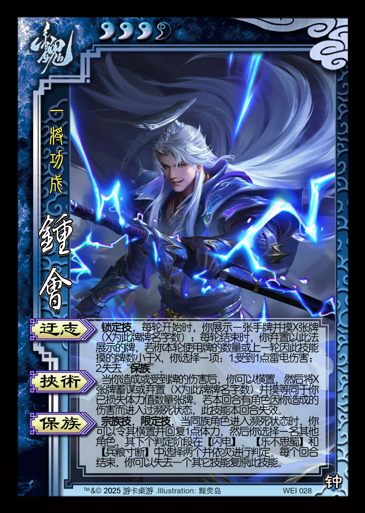

点击卡面查看大图
魏
族钟会
♥3/4一将功成
迂志锁定技
锁定技，每轮开始时，你展示一张手牌并摸X张牌（X为此牌牌名字数）；每轮结束时，你弃置以此法展示的牌，若你本轮使用牌的数量或上一轮因此技能摸的牌数小于X，你选择一项：1.受到1点雷电伤害；2.失去“保族”。
挟术
当你造成或受到牌的伤害后，你可以横置，然后将X张牌蓄谋或弃置（X为此牌牌名字数）并摸等同于你已损失体力值数量张牌。若本回合有角色因你造成的伤害而进入过濒死状态，此技能本回合失效。
保族宗族技限定技
宗族技，限定技，当同族角色进入濒死状态时，你可以令其横置并回复1点体力，然后你选择一名其他角色，其下个判定阶段在【闪电】、【乐不思蜀】和【兵粮寸断】中选择两个并依次进行判定。每个回合结束，你可以失去一个其它技能复原此技能。